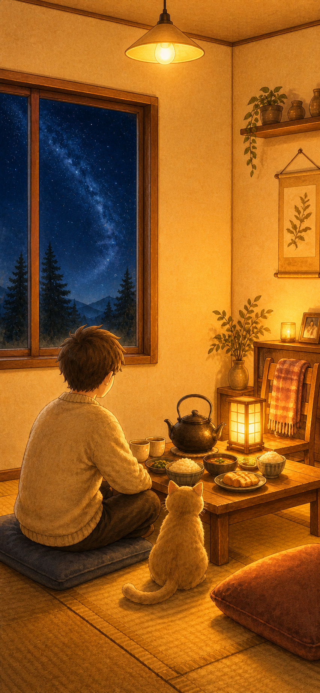

安静 · 舒心
安静 · 舒心
再看一会儿夜空
深蓝、风与草坡继续给人留出呼吸；门从第一秒可点，但不催。
外面安静舒心 · 屋内明亮暖心
不是暗房里的一小团灯，也不是刺眼的白光。墙、天花、地板和家具都接住柔和暖光， 桌上有一顿简单晚饭。人物在左，普通家猫在右，可以直接坐下来。
00 / 已撤销
用户已明确要求“整个房间明亮温暖”。V1.2 不展示暗沉主画面，也不把局部灯池继续包装成“回家”。
01 / 四帧回家链
四帧只表达情绪与空间连续性，不构成任务路径。户外 V7 保持原样；房间最终态始终人物左、普通猫右。
安静 · 舒心
深蓝、风与草坡继续给人留出呼吸；门从第一秒可点，但不催。
门内有暖光
暖光从门内稳定透出，不脉冲、不画路线；用户决定什么时候回家。

明亮 · 暖心墙、天花、地板和家具都有暖光；晚饭、热壶、人物与猫清楚可见，角落不黑。
不弹奖励，不要求完成；整屋保持柔和明亮，让“到家”本身成为体验。
02 / A–B 到家方式
用户已批准 A。B 仅作历史决策追溯，不进入当前母版、动效或 Cocos；两案都不得保留黑角。
开门第一帧就是完整暖家：不是用户完成了什么，灯和晚饭本来就在等你。
低亮只允许作为极短的进入起点；最终态必须与 A 完全相同，不能把黑角保留下来。
03 / 明亮方法
“明亮”由大面积可读的墙面、天花、地板和家具表达，不靠高亮纯白、Bloom 或整屏橙色滤镜。
04 / 玩法影响
继续保留“把小光拖到壶边”会让用户疑惑：房间已经这么亮，为什么还需要这团光？ 以下两种只用于讨论，不代表负责人或任何员工可以自行选定。
轻触门，或零操作后自然看见已经亮着的家；进入后围绕掀开饭罩、碰一碰热壶或等水开的小剧场展开。
触门进入短暂低亮态，第一次轻触在 0.55 秒内让墙、天花、地板和家具一起亮到最终状态，随后才处理热壶。
05 / 关键 UI 示意
这里只示意时长、轻触／无操作、收尾和分享；每个可点击热区至少 44×44，正式逻辑仍等待玩法分叉批准。
今晚，想待多久？
不倒数，随时可以走。暖纸面板放在地板留白区，不遮人物、猫和晚饭；默认 5 分钟仍由用户确认。
灯已经亮着。
轻触继续，或什么也不做。不把“请点击”做成任务；零操作也能完整看见家与晚饭，具体触发归入上方玩法待决。
水热了。
你也先缓一会儿。
整屋不熄灯、不降成暗房，也不弹奖励；用户可以继续坐着，或主动结束。
5:4 卡片把“灯和晚饭已经备好”留给朋友，不做通关成绩或身份投射。
06 / 不变项与停止线
探索图只帮助判断空间、光色和晚饭语义；正式资产全部原创分层重绘，并删除多余第三灯具与可识别人像相框。
人物左、猫右；不幼龄化、不拟人化、不命名，不借现成 IP。
房间、角色、食物和家具共享颗粒、边缘与受光。
相邻热区至少 8px；拖、滑动作必须有轻触替代。
不靠 SHRINK 塞字，短句自然换行且不遮晚饭和角色。
关闭掠过、视差与位移后，仍能理解“门外冷、家里暖”。
只能据此原创分层重绘；不得把本板、探索 PNG、用户参考图或未批准互动方案直接交给 Cocos。
07 / 用户决策
用户已经选择“灯一直为你亮着”。UI／美术现在只允许据此原创分层重绘 390×844 正式母版； 那张母版仍需再次展示确认。核心玩法继续单独提案，两个批准都完成后才可能接入 Cocos。